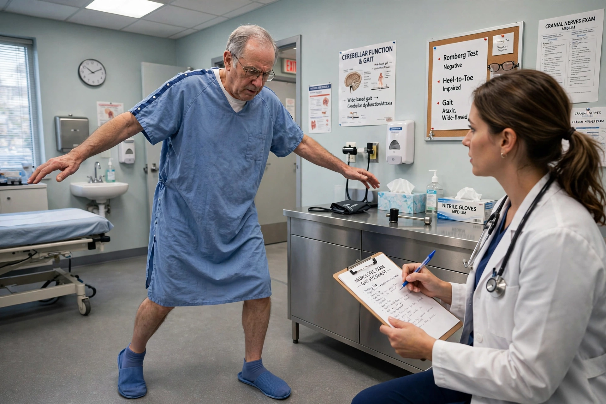

Ataxia
| Ataxia | |
|---|---|
| Specialty | Neurology |
| Symptoms | Lack of coordination of muscle movements; unsteady gait; slurred speech; abnormal eye movements |
| Causes | Cerebellar dysfunction, stroke, multiple sclerosis, alcohol use, genetic disorders (e.g. Friedreich's ataxia, spinocerebellar ataxias) |
| Treatment | Depends on cause; physical therapy, occupational therapy, assistive devices |
| ICD-10 | R27.0 |

Ataxia is a neurological sign consisting of lack of coordination of muscle movements that includes gait abnormality, speech changes and abnormalities in eye movements. Ataxia is a clinical manifestation indicating dysfunction of parts of the nervous system that coordinate movement, such as the cerebellum.
Ataxia can be limited to one side of the body, which is referred to as hemiataxia. Several possible causes exist for these patterns of neurological dysfunction. Dystaxia is a mild degree of ataxia.
Types
Cerebellar
The term cerebellar ataxia is used to indicate ataxia due to dysfunction of the cerebellum. The cerebellum is responsible for integrating a significant amount of neural information and correlating it to perform smooth and accurate movements. Cerebellar ataxia can result from many diseases and may present with symptoms of an inability to coordinate balance, gait, extremity and eye movements.
Sensory
The term sensory ataxia is employed to indicate ataxia due to loss of proprioception, the loss of sensitivity to the positions of joint and body parts. This is generally caused by dysfunction of the dorsal columns of the spinal cord, or by damage to peripheral nerves and their connections.
Vestibular
The term vestibular ataxia is employed to indicate ataxia due to dysfunction of the vestibular system, which in acute and unilateral cases is associated with prominent vertigo, nausea and vomiting.
Causes
Causes of ataxia include stroke, brain tumours, multiple sclerosis, head trauma, chronic alcohol use, vitamin B12 or vitamin E deficiency, hypothyroidism, and inherited conditions. Hereditary ataxias include Friedreich's ataxia, the most common autosomal recessive ataxia, and the autosomal dominant spinocerebellar ataxias. Ataxia-telangiectasia is another inherited cause.
Diagnosis and treatment
Diagnosis involves neurological examination, imaging of the brain and spinal cord, and, where a hereditary cause is suspected, genetic testing. There is no cure for many forms of ataxia; treatment focuses on the underlying cause where one can be treated, together with physical therapy, occupational therapy, speech therapy and mobility aids.
See also: Cerebellum · Multiple sclerosis · Stroke